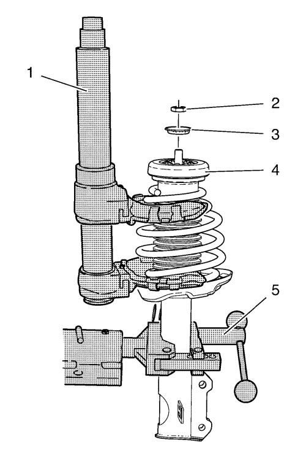
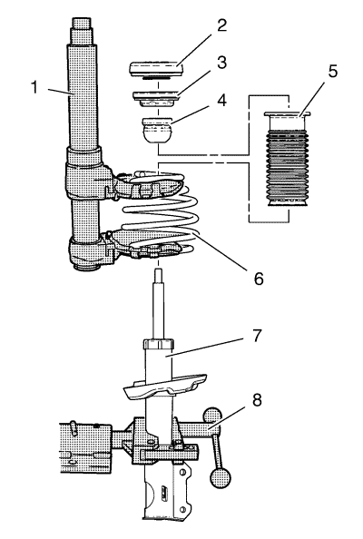
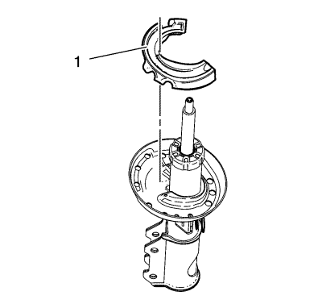

Sustitución del refuerzo, componente del refuerzo o muelle
Herramientas especiales
| • | CH-6068 Dispositivo tensor de muelle |
| • | CH-6066 Dispositivo de sujeción |
Si desea informarse sobre herramientas regionales equivalentes, consultar Herramientas especiales .
Procedimiento de desmontaje
- Retire el conjunto del refuerzo. Consultar Sustitución del conjunto del refuerzo .

- Monte el refuerzo en la herramienta de retención CH-6066 (5).
- Tense el muelle (4) utilizando el dispositivo tensor CH-6068 para retirar la tensión del muelle de montaje del refuerzo superior.
- Retire la tuerca del refuerzo (2).
- Retire la arandela del aislante del soporte del refuerzo (3).

- Desmonte los componentes de la columna de suspensión frontal:
| 6.1. | Retire el conjunto del aislante del soporte del refuerzo (2). Examine si hay daños y sustituya lo necesario. |
| 6.2. | Desmonte el conjunto de cojinete del soporte del refuerzo (3). Examine si hay daños y sustituya lo necesario. |
| 6.3. | Desmonte el paragolpes (4). Examine si hay daños y sustituya lo necesario. |
| 6.4. | Desmonte el aislante (5). Examine si hay daños y sustituya lo necesario. |
| 6.5. | Desmonte el muelle (6) con el dispositivo tensor CH-6068 (1). |
| 6.6. | Desmonte la tensión del muelle utilizando el dispositivo tensor CH-6068. Examine si hay daños y sustituya lo necesario. |
| 6.7. | Desmonte el refuerzo (7) de la herramienta de retención CH-6066 (8). |

- Desmonte el aislante inferior (1). Examine si hay daños y sustituya lo necesario.
Procedimiento de montaje
- Monte el aislante inferior (1).
- Monte los componentes de la columna de suspensión:
| 2.1. | Monte el refuerzo (7) en la herramienta de retención CH-6066 (8). |
| 2.2. | Monte el muelle (6) en el dispositivo tensor CH-6068 (1), comprima el muelle para retirar la tensión del muelle. |
| 2.3. | Monte el muelle (6) en el refuerzo (7). |
| 2.4. | Monte el aislante (5) en el refuerzo (7). |
| 2.5. | Monte el paragolpes (4) en el refuerzo (7). |
| 2.6. | Monte el cojinete de montaje del refuerzo (3) en el refuerzo (7). |
| 2.7. | Monte el conjunto del aislante del soporte (2) en el refuerzo (7). |
- Monte la arandela del aislante del soporte del refuerzo (3).
Precaución:Consulte Precaución con las fijaciones en la sección Prólogo.
- Monte la tuerca del refuerzo (2) en el árbol del soporte y apriétela a 70 N·m (52 lib. pie).
- Desmonte el dispositivo tensor CH-6068 (1) del muelle (4).
- Desmonte el refuerzo frontal de la herramienta de retención CH-6066(5).
- Monte el conjunto del refuerzo. Consultar Sustitución del conjunto del refuerzo .
| © Copyright Chevrolet. Reservados todos los derechos |